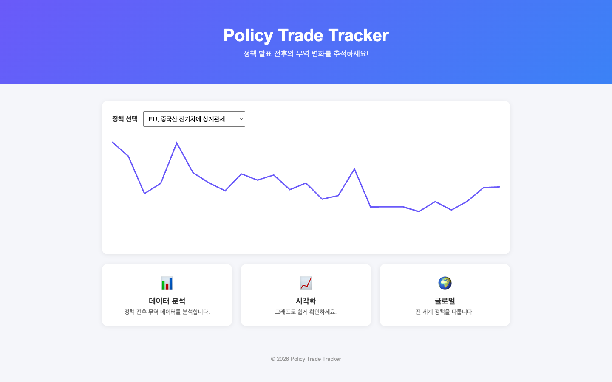
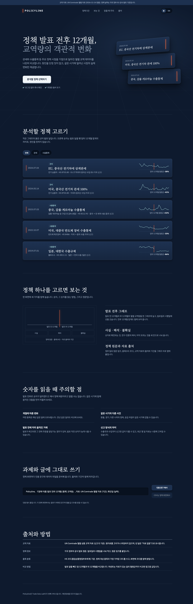
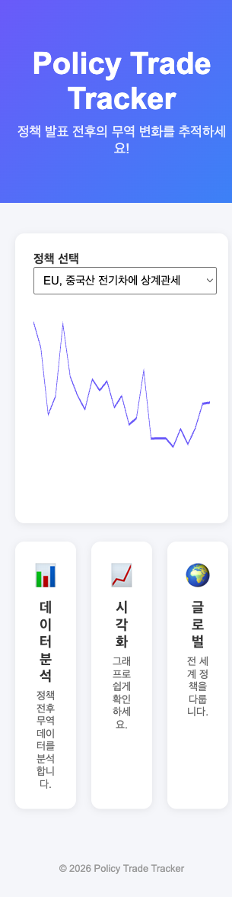
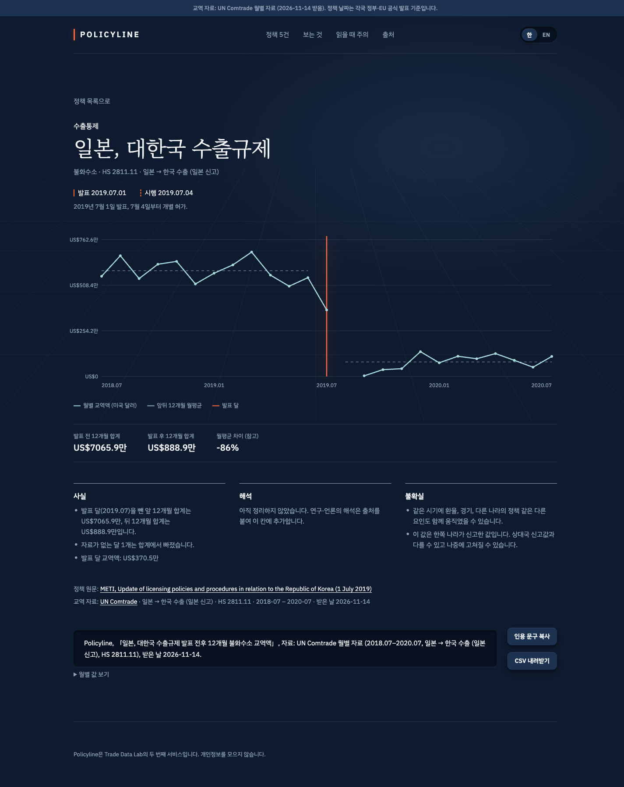

before는 세부 요구 없이 "정책 발표 → 무역 변화 추적기" 아이디어만으로 단순하게 만든 첫 결과물을 재현한 화면입니다 (review/before/index.html). after는 PLAN.md · DESIGN.md 를 지켜 만든 지금 화면입니다 (index.html). 두 화면 모두 1440px 폭에서 찍었고, 같은 UN Comtrade 월별 자료를 씁니다.




| # | 이런 모습이 있나? | before | after |
|---|---|---|---|
| 1 | 컴퓨터 기본 글꼴 그대로 (특별히 고른 글꼴이 없음) | ✔ | – |
| 2 | 가운데 정렬 큰 제목 + 보라 · 파랑 그라데이션 배경 | ✔ | – |
| 3 | 크기 · 간격 · 그림자가 전부 똑같은 카드 3~6개 | ✔ | – |
| 4 | 제목 · 본문 크기 차이가 작아 무엇이 중요한지 안 보임 | – | – |
| 5 | 색이 여기저기 제각각 (같은 파랑이 조금씩 다름) | – | – |
| 6 | 버튼에 마우스를 올리거나 눌러도 아무 변화가 없음 | ✔ | – |
| 7 | 휴대폰 폭에서 글자가 넘치거나 겹침 (before: 카드 3개가 80px로 좁아져 한 글자씩 꺾임) | ✔ | – |
| 8 | "어디서 본 것 같다" — 서비스 이름만 바꾸면 다른 회사 것과 똑같음 | ✔ | – |
| 합계 | 6 / 8 | 0 / 8 |
Claude가 채점했습니다. 3번: after의 정책 목록 5줄은 같은 모양이지만, 같은 종류의 데이터를 나열하는 목록이라 같은 모양으로 두었습니다. 다르게 보시면 고쳐 주세요.